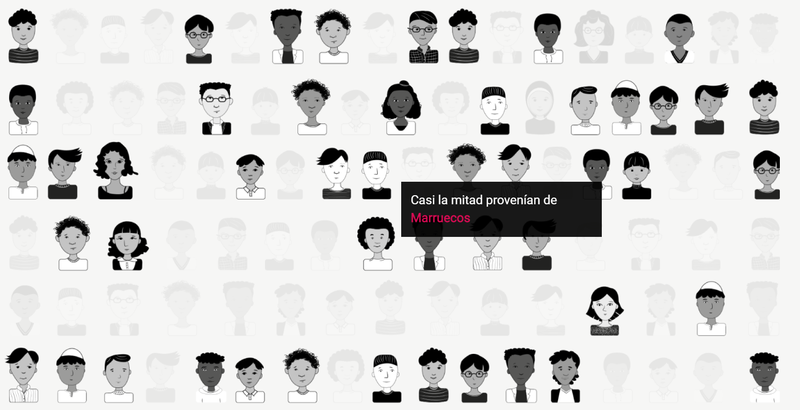

‘Menores no acompañados en Europa’, un reportaje digno para analizar
Desgranamos este reportaje de datos y las causas para pensar por qué emplea adecuadamente los elementos más reseñables del periodismo web
___
Miriam Puelles
Menores no acompañados en Europa. Cuando el sistema les pierde la pista. Este es el título del reportaje elegido para este análisis. Un tema de Newtral en el que se expone la realidad de este grupo de personas que cada vez más deciden emprender su camino en solitario con destino al Viejo Continente para tener una vida con más oportunidades.
La cuestión es: ¿por qué elegir este reportaje y no otro? Lo cierto es que a la hora de analizar un tema de periodismo de datos creo que éste es de los más recientes y mejor realizados. Y motivos para esta afirmación no faltan.
En primer lugar, porque desde la URL hasta los colores pasando por el software a través del que se ha montado el reportaje hasta los colores empleados para el mismo merecen mención. Por eso vayamos por partes.
La URL está plenamente acertada ya que coincide con el título del reportaje y se han omitido aquellas preposiciones, artículos o determinantes que realmente no aportan a la búsqueda web. Asimismo, es corto y ejemplifica de lo que va el tema.
A esto hay que sumar la propia estructura del reportaje, la cual procede previsiblemente de Shortland, una web muy intuitiva en la que puedes montar este tipo de reportajes por un módico precio y que es empleada por grandes medios de comunicación de escala internacional. Al menos, así me lo parece.
Además, en este caso, como todo buen reportaje periodístico, comienza indicando la noticia, el contexto y ya a continuación dan paso a los datos. Lo hacen a través de unas imágenes fácilmente ejecutables en una web de tales características como la que podemos observar del niño, del protagonista de la historia, avanzando por el camino conforme transcurre la narración.
Una vez se pasa al ladillo de las ‘Desapariciones’ la estética cambia. El texto deja de estar a la derecha para ubicarse en el centro de la narración en la introducción antes de pasar a las infografías representadas con medios de transporte. De hecho, esta simple técnica resulta muy útil para poder hacerse una idea más clara de la magnitud del problema.
Y entonces, justo entonces, llega la historia. Porque un reportaje sin personalización pierde fuerza. En ese punto se habla de Ilyass, un joven de 20 años que llegó a España procedente de Marruecos a los 14 años, al tiempo que se complementa su historia con las palabras del gabinete de la Consejería de Derechos Sociales, Igualdad, Diversidad y Juventud del Gobierno de Canarias.
Gráficos y tipografía
A partir de este punto una buena narración como sostiene este texto puede mantener al lector dentro de la historia. Para ello Newtral emplea más gráficos a base de mapas o de infografías bien diseñadas que buscan simular la personalización tan necesaria que se citaba previamente. Y, si bien algunas visualizaciones deslucen por el tamaño necesario en determinadas pantallas, lo cierto es que el resultado es muy llamativo. Y ese es el objetivo.
Un reportaje social y de denuncia como es el que nos acontece ha de usar todas sus armas para mantener al lector hasta el final. Y en este caso se cumple. Para ello juega bien con el tamaño de los párrafos y las infografías con el fin de mantener el ritmo y se basa en una gran fuente de datos para dotar de total respaldo todas las afirmaciones que se vierten en el texto (pueden verse tras el final de la narración).
Además, sale de la línea que mantiene Newtral pese a mantener muy sabiamente una gama cromática similar a la del medio de comunicación. El motivo: sólo emplea el negro, el blanco y el gris en dos tonos diferentes y resalta el granate para aquellas palabras importantes.
Esto denota un claro conocimiento del lenguaje web periodístico y el diseño de un reportaje de tales características. Si un periódico no emplea más de tres colores porque al usuario le puede generar una sensación de rechazo, ¿por qué no iba a mantener esta idea el reportaje? Por ello considero que está muy bien focalizada la gama cromática.
Por otro lado, se lee claramente que este tipo de textos están diseñados también para ser leídos en formato móvil por el tamaño de letra y que emplea una tipografía plana que incita a la permanencia.
Por último, no quisiera concluir este análisis sin recordar que este tipo de visualizaciones son cada vez más habituales entre los medios de comunicación. No obstante, el lector sabe que cuando la estética es de esta forma es porque se va a encontrar un reportaje en profundidad. Y, ante el ruido, mejor detenerse a leer textos de calidad.
¿Quieres leer la Actividad 3?